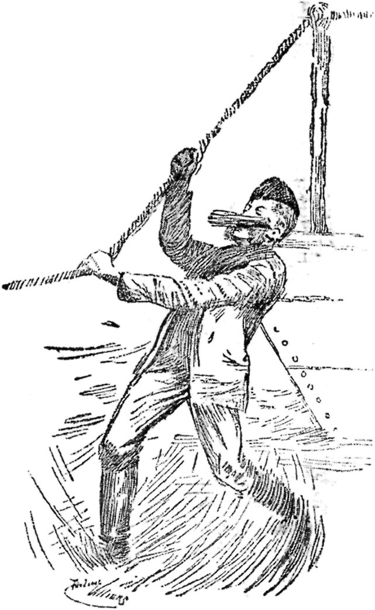

MY SERVANT ANDREAS.
BY ARCHIBALD FORBES.
ILLUSTRATIONS BY FREDERIC VILLIERS.
{kind=link}
I think it quite likely that some of my young American friends, about ten months ago, were burning to have an opportunity of accompanying General Miles down the Pacific coast, and of describing in glowing sentences to their countrymen at home how Uncle Sam's young man turned to flight the Chilian insurrectionists, who were breathing out threatening and slaughter against the great Northern Republic. There is an undoubted fascination in the picturesque and adventurous life of the war correspondent. One must, of course, have a distinct bent for the avocation, and if he is to succeed he must possess certain salient attributes. He must expose himself to rather greater risks than fall to the lot of the average fighting man, without enjoying any of the happiness of retaliation which stirs the blood of the latter; the correspondent must sit quietly on his horse in the fire, and, while watching every turn in the battle, must wear the aspect as if he rather enjoyed the storm of missiles than otherwise. When the fighting is over, the soldier, if not killed, generally can eat and sleep; ere the echoes of it are silent, the correspondent of energy—and if he has not energy he is not worth his salt—must already be galloping his hardest towards the nearest telegraph wire, which, as like as not, is a hundred miles distant. He must "get there," by hook or by crook, in a minimum of time; and as soon as his message is on the wires, he must be hurrying back to the army, else he may chance to miss the great battle of the war. The correspondent must be most things to all men; he must have the sweet, angelic temper of a woman, be as affable as if he were running for office, and at the same time be big and ugly enough to impress the conviction that it would be extremely unwise to take any liberties with him.
The career, no doubt, has some incidental drawbacks. No fewer than five British correspondents were killed in the recent campaigns in the Soudan. General Sherman threatened to hang all the correspondents found in his camp after a certain day, and General Sherman was the kind of man to fulfil any threat he made. I suppose there was no correspondent taking part in the Franco-German and Russo-Turkish wars who was not in custody over and over again on suspicion of being a spy. I have been a prisoner myself in France, Spain, Servia, Germany, Austria, Hungary, Russia, Roumania and Bulgaria; and I may perhaps venture to remark in passing that I cannot recommend any of these countries from this point of view. But the casual confinements, half irritating, half comic, to which he may be subjected, do not bother the war correspondent of the old world nearly as much as do the foreign languages which, if he is not a good linguist, hamper him every hour of every day. He really should possess the gift of tongues—be conversant with all European languages, a neat assortment of the Asiatic languages, and a few of the African tongues, such as Abyssinian, Ashantee, Zulu, and Soudanese. But how few in the nature of things can approximate this polyglot versatility. Often in Eastern Europe, and in Afghanistan, I have envied Messrs. Swinton, Smalley, Whitelaw Reed, and the other notable war correspondents of the American Civil War, in that they had not the difficulties of outlandish tongues to contend with. I own myself to be a poor linguist, and have many and many a time suffered for my dullness of what the Scotch call "up-take." It is true that I was fairly conversant with French and German, and could express my wants in Russian, Roumanian, Bulgarian, Spanish, Turkish, Hindustanee, Pushtoo, and Burmese, every word of which smatterings I have long since forgotten. But the truth is that the poorest peoples in the world in acquiring foreign languages are the English and the French; the readiest are the Russians and Americans. It was, after a fashion, a liberal education to listen to the fluency in some half-dozen languages of Poor McGahan, the "Ohio boy," who graduated from the plough to be perhaps the most brilliant war correspondent of modern times. His compatriot and colleague, Frank Millet, who has fallen away from glory as a war correspondent, and has taken to the inferior trade of painting, seemed to pick up a language by the mere accident of finding himself on the soil where it was spoken. In the first three days, after crossing the Danube into Bulgaria, Millet went about with book in hand, gathering in the names of things at which he pointed, and jotting down each acquisition in the book. On the fourth day he could swear in Bulgarian, copiously, fervently, and with a measure of intelligibility. Within a week he had conquered the uncouth tongue. As he voyaged lately down the Danube from source to mouth, charmingly describing the scenic panorama of the great river in the pages of Harper, those of you who have read those sketches will not have failed to notice how Millet talked to German, Hungarian, Servian, Bulgarian, Roumanian, and Turkish, each in his own tongue, those diverse languages having been acquired by him during the few months of the Russo-Turkish war.

"MACGAHAN AND FRANK MILLET."
By this time, you may be wondering just where "Andreas" comes in. Perhaps I have been over long in getting to my specific subject; but I will not be discursive any more. It was at the table d'hote in the Serbische Krone Hotel, in Belgrade, where I first set eyes on Andreas. In the year 1876, Servia had thought proper to throw off the yoke of her Turkish suzerain, and to attempt to assert her independence by force of arms. But for very irregularly paid tribute she was virtually independent already, and probably in all Servia there were not two hundred Turks. But she ambitiously desired to have the name of as well as the actuality of being independent; the Russians helped her with arms, officers, and volunteer soldiers; and when I reached Belgrade, in May of the year named, there had already been fighting, in which the Servians had by no means got the worst. No word of the Servian tongue had I, and it was the reverse of pleasant for a war correspondent in such plight to learn that outside of Belgrade nobody, or at least hardly anybody, knew a word of any other language than the native Servian. As I ate, I was being attended by a very assiduous waiter, whose alertness and anxiety to please were very conspicuous. He was smart with quite un-Oriental smartness; he whisked about the tables with deftness; he spoke to me in German, to the Russian officers over against me in what I assumed was Russian, to the Servians dining behind me in what I took to be Servian. I liked the look of the man; there was intelligence in his aspect. One could not call him handsome, but there was character in the keen black eye, the high features and the pronounced chin, fringed on either side by bushy black whiskers.
{kind=link}
I had brought no servant with me; the average British servant is worse than useless in a foreign country, and the dubiously-polyglot courier is a snare and a deception on campaign. I had my eye on Andreas for a couple of days, during which he was of immense service to me. He seemed to know and stand well with everyone in Belgrade; it was he, indeed, who presented me in the restaurant to the Prime Minister and the Minister for War, who got together for me my field necessaries, who helped me to buy my horses, and who narrated to me the progress of the campaign so far as it had gone. On the third day I had him in my room and asked whether he would like to come with me into the field as my servant. He accepted the offer with effusion; we struck hands on the compact; he tendered me credentials which I ascertained to be extremely satisfactory; and then he gave me a little sketch of himself. It was somewhat mixed, as indeed was his origin. Primarily he was a Servian, but his maternal grandmother had been a Bosniak, an earlier ancestress had been in a Turkish harem, there was a strain in his blood of the Hungarian zinganee—the gipsy of Eastern Europe, and one could not look at his profile without a suspicion that there was a Jewish element in his pedigree. "A pure mongrel," was what a gentleman of the British Legation termed Andreas, and this self-contradictory epithet was scarcely out of place.
Andreas turned out well. He was as hardy as a hill-goat, careless how and when he ate, or where he slept, which, indeed, was mostly in the open. It seemed to me that he had cousins all over Servia, chiefly of the female persuasion, and I am morally certain that the Turkish strain in his blood had in Andreas its natural development in a species of fin-de-siècle polygamy. Sherman's prize "bummer" was not in it with Andreas as a forager. At first, indeed, I suspected him of actual plundering, so copiously did he bring in supplies, and so little had I to pay for them; but I was not long in discovering that all kinds of produce were dirt cheap in Servia, and that as I could myself buy a lamb for a quarter, it was not surprising that Andreas, to the manner born, could easily obtain one for half the money. He was an excellent horsemaster, and the stern vigour with which he chastised the occasional neglect of the cousin whom he had brought into my service as groom, was borne in upon me by the frequent howls which were audible from the rear of my tent. There was not a road in all Servia with whose every winding Andreas was not conversant, and this "extensive and peculiar" knowledge of his was often of great service to me. He was a light-weight and an excellent rider; I have sent him off to Belgrade with a telegram at dusk, and he was back again by breakfast time next morning, after a gallop of quite a hundred miles.
No exertion fatigued him; I never saw the man out of humour; there was but one matter in regard to which I ever had to chide him, and in that I had perforce to let him have his own way, because I do not believe that he could restrain himself. He had served the term in the army which is, or was then, obligatory on all Servians; and on the road or in camp he was rather more of a "peace at any price" man than ever was the late Mr. John Bright himself. When the first fight occurred, Andreas claimed to be allowed to witness it along with me. I demurred; he might get hit; and if anything should happen to him, what should I do for a servant? At length I gave him the firm order to remain in camp, and started myself with the groom behind me on my second horse. The fighting occurred eight miles from camp, and in the course of it, leaving the groom in the rear, I had accompanied the Russian General Dochtouroff into a most unpleasantly hot place, where a storm of Turkish shells were falling in the effort to hinder the withdrawal of a disabled Servian battery. I happened to glance over my shoulder, and lo! Andreas on foot was at my horse's tail, obviously in a state of ecstatic enjoyment of the situation. I peremptorily ordered him back, and he departed sullenly, calmly strolling along the line of Turkish fire. Just then, Tchernaieff, the Servian Commander-in-Chief, had, it seemed, ordered a detachment of infantry to take in flank the Turkish guns. From where we stood I could discern the Servian soldiers hurrying forward close under the fringe of a wood near the line of retirement along which Andreas was sulking. Andreas saw them too, and retreated no step further, but cut across to them, snatching up a gun as he ran, and the last I saw of him was while he was waving on the militiamen with his billycock, and loosing off an occasional bullet, while he emitted yells of defiance against the Turks, which might well have struck terror into their very marrow. Andreas came into camp at night very streaky with powder stains, minus the lobe of one ear, uneasy as he caught my eye, yet with a certain elateness of mien. I sacked him that night, and he said he didn't care, and that he was not ashamed of himself. Next morning, as I was rising, he rushed into the tent, knelt down, clasped my knees, and bedewed my ankles with his tears. Of course I reinstated him; I couldn't do without him, and I think he knew it.
{kind=link}
But I had yielded too easily. Andreas had established a precedent. He insisted, in a quiet, positive manner, on accompanying me to every subsequent battle; and I had to consent, always taking his pledge that he would obey the injunctions I might lay upon him. And, as a matter of course, he punctually and invariably violated that pledge when the crisis of the fighting was drawing to a head, and just when this "peace at any price" man could not control the bloodthirst that was parching him.
One never knows how events are to fall out. It happened that this resolution on the part of Andreas to accompany me into the fights once assuredly saved my life. It was on the day of Djunis, the last battle fought by the Servians. In the early part of the day there was a good deal of scattered woodland fighting in front of the entrenched line, which they abandoned when the Turks came on in earnest. Andreas and I were among the trees trying to find a position from which something was to be seen, when all of a sudden I, who was in advance, plumped right into the centre of a small scouting party of Turks. They tore me out of the saddle, and I had given myself up for lost—for the Turks took no prisoners, their cheerful practice being to slaughter first and then abominably to mutilate—when suddenly Andreas dashed in among my captors, shouting aloud in a language which I took to be Turkish, since he bellowed "Effendi" as he pointed to me. He had thrown away his billycock and substituted a fez, which he afterwards told me he always carried in case of accidents, and in one hand he waved a dingy piece of parchment with a seal dangling from it, which I assumed was some obsolete firman. The result was truly amazing, and the scene had some real humour in it. With profound salaams, the Turks unhanded me, helped me to mount, and, as I rode off at a tangent with Andreas at my horse's head, called after me what sounded like friendly farewells. When we were back among the Russians—I don't remember seeing much of the Servians later on that day—Andreas explained that he had passed himself for the Turkish dragoman of a British correspondent whom the Padishah delighted to honour, and that, after expressing a burning desire to defile the graves of their collective female ancestry, he had assured my captors that they might count themselves as dead men if they did not immediately release me. To his ready-witted conduct I undoubtedly owe the ability to write now this record of a man of curiously complicated nature.
When the campaign ended with the Servian defeat at Djunis, Andreas went back to his headwaitership at the Serbische Krone in Belgrade. Before leaving that capital I had the honour of being present at his nuptials, a ceremony the amenity of which was somewhat disturbed by the violent incursion into the sacred edifice of sundry ladies all claiming to have prior claims on the bridegroom of the hour. They were, however, placated, and subsequently joined the marriage feast in the great arbour behind the Krone. Andreas faithfully promised to come to me to the ends of the earth on receipt of a telegram, if I should require his services, and he were alive.
{kind=link}
Next spring the Russo-Turkish war broke out, and I hurried eastward in time to see the first Cossack cross the Pruth. I had telegraphed to Andreas from England to meet me at Bazias on the Danube below Belgrade. Bazias is the place where the railway used to end, and where we took steamer for the Lower Danube. Andreas was duly on hand, ready and serviceable as of old, a little fatter, and a trifle more consequential than when we had last parted. He was, if possible, rather more at home in Bucharest than he had been in Belgrade, and recommended me to Brofft's Hotel, in comparison with which the charges of the Brunswick in New York are infinitesimal. He bought my wagon and team, he found riding horses when they were said to be unprocurable, he constructed a most ingenious tent, of which the wagon was, so to speak, the roof-tree, he laid in stores, arranged for relays of couriers, and furnished me with a coachman in the person of a Roumanian Jew who he one day owned was a distant connection, and whose leading attribute was, that he could survive more sleep than any other human being I have ever known. We took the field auspiciously, Mr. Frederic Villiers, the war artist of the London Graphic, being my campaigning comrade. Thus early I discerned a slight rift in the lute. Andreas did not like Villiers, which showed his bad taste, or rather, perhaps, the narrowness of his capacity of affection; and I fear Villiers did not much like Andreas, whom he thought too familiar. This was true, and it was my fault; but really it was with difficulty that I could bring myself to treat Andreas as a servant. He was more, in my estimation, in the nature of the confidential major-domo, and to me he was simply invaluable. Villiers had to chew his moustache, and glower discontentedly at Andreas.
I had some good couriers for the conveyance of despatches back across the Danube to Bucharest, whence everything was telegraphed to London; but they were essentially fair-weather men. The casual courier may be alert, loyal, and trustworthy; he may be relied on to try his honest best, but it is not to be expected of him that he will greatly dare and count his life but as dross when his incentive to enterprise is merely filthy lucre. But I could trust Andreas to dare and to endure—to overcome obstacles, and, if man could, to "get there," where, in the base-quarters in Bucharest, the amanuenses were waiting to copy out in round hand for the foreign telegraphist the rapid script of the correspondent scribbling for life in the saddle or the cleft of a commanding tree while the shells were whistling past. We missed him dreadfully when he was gone—even Villiers, who liked good cooking, owned to thinking long for his return. For, in addition to his other virtues, Andreas was a capital cook. It is true that his courses had a habit of arriving at long and uncertain intervals. After a dish of pungent stew, no other viands appearing to loom in the near future, Villiers and myself would betake ourselves to smoking, and perhaps on a quiet day would lapse into slumber. From this we would be aroused by Andreas to partake of a second course of roast chicken, the bird having been alive and unconscious of its impending fate when the first course had been served. No man is perfect, and as regarded Andreas there were some petty spots on the sun. He had, for instance, a mania for the purchase of irrelevant poultry, and for accommodating the fowls in our wagon, tied by the legs, against the day of starvation, which he always, but causelessly, apprehended. I do not suppose any reader has ever had any experience of domestic poultry as bedfellows, and I may caution him earnestly against making any such experiment.
I do not know whether it is a detraction from Andreas's worth to mention that another characteristic of his was the habit of awaking us in the still watches of the night, for the purpose of imparting his views on recondite phases of the great Eastern question. But how trivial were such peccadilloes in a man who was so resolute not to be beaten in getting my despatch to the telegraph wire, that once, when three pontoons of the bridge across the Danube were sunk, he crossed the gap hand over hand by the hand-rope, sloshing down with the current as the slack of the rope gave to his weight! Andreas became quite an institution in the Russian camp. When Ignatieff, the Tsar's intimate, the great diplomatist who has now curiously fizzled out, would honour us by partaking sometimes of afternoon tea in our tent, he would call Andreas by his name and call him "Molodetz"—the Russian for "brave fellow." In the Servian campaign Dochtouroff had got him the Takova cross, which Andreas sported with great pride, and Ignatieff used to tell him that the Tsar was seriously thinking of conferring on him the Cross of St. George, badinage which Andreas took as dead earnest. MacGahan used gravely to entreat him to take greater care of his invaluable life, and hint that if any calamity occurred to him, the campaign would ipso facto come to an end. Andreas knew that MacGahan was quizzing him, but it was exceedingly droll how he purred and bridled under the light touch of that genial humourist, whose merits his own countrymen, to my thinking, have never adequately recognised. The old story of a prophet having scant honour in his own country.

"CROSSED THE GAP HAND OVER HAND."
{kind=link}
After the long strain of the desperate but futile attack made by the Russians on Plevna in the early part of the September of the war, I fell a victim to the malarial fever of the Lower Danube, and had to be invalided back to Bucharest. The illness grew upon me, and my condition became very serious. Worthy Andreas nursed me with great tenderness and assiduity in the lodgings to which I had been brought, since they would not accept a fever patient at Brofft's. After some days of wretchedness I became delirious, and, of course, lost consciousness; my last recollection was of Andreas wetting my parched lips with lemonade. When I recovered my senses, and looked out feebly, there was nobody in the room. How long I had been unconscious I had no idea. I lay there in a half stupor till evening, unable from weakness to summon any assistance. In the dusk came the English doctor who had been attending me. "Where is Andreas?" he asked. I could not tell him. "He was here last night," he said; "you have been delirious for seven days." The woman of the house was summoned. She had not seen Andreas since the previous night, but, busy about her own domestic affairs, had no suspicion until she entered the room that Andreas was not with me still.
Andreas never returned. It appeared that he had taken away all his belongings. One day, when gradually mending, I put my hand under the pillow with intent to find my watch, which was an heirloom, and wind it up. I could find no watch. No more could I find the bag of ducats which was alongside the watch before I lost my senses. Search was made throughout the room without success, and, with whatever reluctance to believe a thing so utterly unlikely, I could not refrain from the conviction that Andreas must have carried off both money and watch. The thought caused a relapse, but at length I attained convalescence, and was able to drive out. But the doctor was firm that during the now imminent winter I was not to return to the field. Fortunately, my able colleagues, MacGahan and Millet, were there; and I was therefore the less distressed by Dr. ——'s peremptory sentence on me. I was condemned to return to England as soon as I should be strong enough to travel.
When I had to leave the Plevna front, my colleagues temporarily took charge of my field equipment. But I had brought back to Bucharest my best riding horse, and during my illness he had been standing at livery in the stables of the English Tramway Company. Determining now on the melancholy necessity of selling an animal which had on many a hard day and many a long night-ride served me staunchly, I drove to the stables, and instructed the manager to sell my horse. "Your horse!" he exclaimed, in evident surprise; "your horse was sold weeks ago! Your man, Andreas, came here with a message that we were to dispose of it; and I sold it next day to General Todleben on his way through Bucharest to take the command before Plevna. It fetched a good price, 105 ducats, more than you gave for it; Andreas called for the money, and, of course, I gave it to him."
So Andreas was thief and rogue—deliberate thief and rogue. I was angry, but I was yet more heart-sorry that so fine and true a native should have thus fallen. Just as I was leaving Bucharest for England, a letter came to me from a friend in Galatz, a commercial city of Roumania, near the mouth of the Danube. Its P.S. only is worth quoting. "So you have parted with your man, Andreas. I thought from what you had told me that you would retain him for life. He is here now, I saw him drunk in the street yesterday. He told Kennedy that he believed you were dead."
{kind=link}
I went straight to Galatz, a long half-day's journey. Andreas was not hard to find; he was smoking in the "Concordia" saloon. I saw him before he saw me; he had a furtive air, he was pallid and his lips twitched; he looked to me on the verge of delirium tremens. I approached him from behind, and uttered the one word, "Andreas!" At the word, he started as if he had been shot, spun round, dropped on his knees, with his hands raised beseechingly, and cried in a broken voice, "Before God, master, I thought you were dead, else I should never have done it! I have not had a happy moment since I threw away my good name—I could not go home! Kill me, send me to prison, punish me how you choose. I shall rejoice to suffer!" And the poor wretch grovelled before me on his stomach.
I had meant to punish him; but he was too broken for chastisement. I could not send to prison the man who had saved my life among the pine-trees of Djunis. I wonder if he really thought me dead—not that, if so, his act was thereby materially palliated. And I thought of two little sentences which my mother taught me when I was a child: "Judge not that ye be not judged," and "Lead us not into temptation." I pulled the man on to his feet and grasped his hand, then with the words, "Give me my father's watch—good-bye, Andreas. I shall remember all the good in you, and forget those last bad days." I turned from him, and quitted the "Concordia" with a lump in my throat that I could not swallow down.